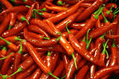

RAW MATERIAL USED TO MAKE GOLDY CHIPS
& SNACKS
Lots of raw material or we can say
ingredients are used in making chips and snakes.
Goldy company also produce many other products like
popcorn,dalmoth,namkeen,differnent flavored chips like tomato flavored,garlic flavored,chilli flavored,and recently added sugar
free goldy chips.
Even though goldy started his business with old potatoes, today's product is made from farm-fresh potatoes delivered daily to manufacturing plants. The sources vary from season to season. In April
and May, potatoes come from UP AND MP; June, July and August bring potatoes from RAJASTHAN and DELHI; in the autumn months, the AGRA supply the majority of potatoes; during
the winter, potato chip manufacturers depend on their stored supplies of potatoes. Stored potatoes are kept
at a constant temperature, between 40-45°F (4.4-7.2°C), until several weeks before
they are to be used. They are then moved to a reconditioning room that is heated to 70-75°F (21.1-23.9°C).
Size and type are important in potato selection. White potatoes that are larger than a
golf ball, but smaller than a baseball, are the best. It takes 100 lb (45.4 kg) of raw potatoes to produce 25 lb (11.3 kg) of chips.
The potatoes are fried in either corn oil, cottonseed oil, or a blend of vegetable oils. An antioxidizing agent is
added to the oil to prevent rancidity. To further insure purification, the oil is passed
through a filtration system daily. Salt and other flavoring ingredients, such as powdered sour cream and onion
and barbecue flavor, are purchased from outside sources. Flake salt is used rather
than crystal salt. Some manufacturers treat the potatoes with chemicals such as phosphoric acid, citric acid,
hydrochloric acid, or calcium chloride to reduce the sugar level, and thus improve the
product's color but in goldy chips natural flavored are used not chemical. The bags are designed and
printed by the TMT potato chip manufacturer. They are stored on rolls and brought to the
assembly line as necessary.
Spices are also used in chips and snacks like salt ,pepper,cream,green chillies ,red chillies,tomato and tomato assence

garam masala etc.
All the spices chilli,dry corriandor,red chilli,salt,garam masala these all are come from fresh farm houses of GOLDY'S.